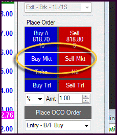
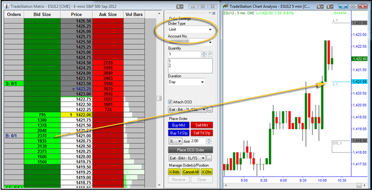
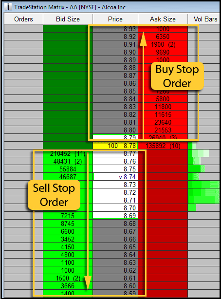
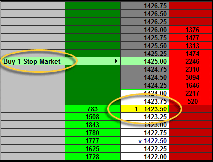
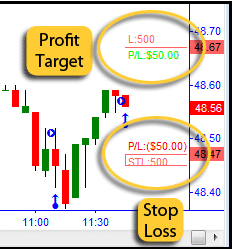
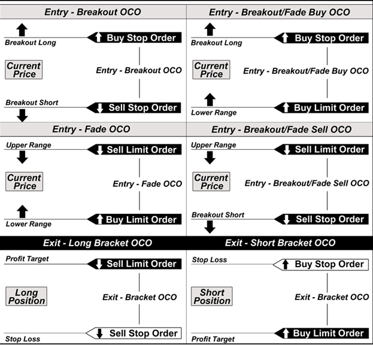
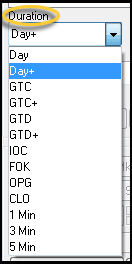

Introduction To Order Types: Introduction
A trade order instructs a broker to enter or exit a position. At first, placing trades may seem overly simple: push the "buy" button when entry conditions are met, and push the "sell" button when it's time to get out. While it is possible to trade in this simplified manner, it is not very efficient, as it requires constant monitoring and it exposes traders to unnecessary financial risks.
Traders who use only the buy and sell buttons may experience losses from slippage and from trading without a protective stop-loss order. Slippage refers to the difference between the price the trader expected and the price at which the trade is actually filled. In fast-moving markets, slippage can be substantial and the difference between a winning and losing trade. Certain order types allow traders to specify exact prices for trades, thereby minimizing the risks associated with slippage.
Protective stop-loss orders, on the other hand, limit trading losses by creating a "line in the sand" past which traders will not risk any more money. These orders automatically close out losing trades at pre-determined price levels. By utilizing advanced order types, a protective stop-loss order can be placed in the market as soon as a trade is entered. This can be especially important to active traders in a fast-moving market when a stop-loss could be reached within seconds of being filled on an order.
Modern trading platforms allow traders to use a multitude of order types to add precision and protection to their trading methodologies. Knowing when to trade is only part of trading; successful traders must also know how to trade, and which order type is appropriate for a given situation. This introductory guide will explain the various order types - from basic to advanced - and provide examples of how each is used by today's traders.
Introduction To Order Types: Long And Short Trades
A basic concept that must be understood before learning about specific order types is the direction in which a trade can be established. Trades can be entered in two different directions, depending on the anticipation of a rising or falling market. Long trades are the classic method of buying with the intention of profiting from a rising market. Long trades can be conducted through all brokers and do not necessarily require the trader to have a margin account (assuming the account has funds to cover the transaction). The losses from a long trade are considered limited (even though these losses could be extensive). This is because if a long trade is entered at any level, price can only go as low as $0 if the trade moves in the wrong direction.
Short trades, on the other hand, are entered with the intention of profiting from a falling market. This is accomplished by borrowing a stock, futures contract or other instrument from a broker and then selling them. Once price reaches the target level, traders buy back the shares (or contracts), or buy to cover, and replace what was originally borrowed from the broker. If price drops, the trade may be profitable (depending on other factors such as slippage and commission); if price rises, the trade will be a loss. Short trading requires a margin account with a broker, since the trader must borrow shares/contracts from the broker in order to complete the transaction. Not all trading instruments can be sold short, and not all brokers offer the same instruments for short sale.
Long Trade = profit from a rising market
Short Trade = profit from a falling market
Trading short positions is an important part of active trading because it allows traders to take advantage of both rising and falling markets. Unlike long trades, where losses are limited, short trades have the potential for unlimited losses. This is because a short trade loses value as the market rises, and since price could theoretically continue rising indefinitely, losses can be unlimited - and catastrophic. Trading with a protective stop-loss allows traders to manage this risk.
Introduction To Order Types: Market Orders
Note: Use a market order to guarantee a fill. A market order is the fastest and most reliable way to get in out of a trade. A market order is appropriate if getting filled is more important than getting a certain price.
A market order is the most basic type of trade order. It instructs the broker to buy (or sell) at the best price that is currently available. Order entry interfaces usually have "buy" and "sell" buttons to make these orders quick and easy, as shown in Figure 1. Typically, this type of order will be executed immediately. The primary advantage to using a market order is that the trader is guaranteed to get the trade filled. If a trader absolutely needs to get in or out of a trade, a market order is the most reliable order type. The downside, however, is that market orders do not guarantee price, and they do not allow any precision in order entry and can lead to costly slippage. Using market orders only in markets with good liquidity can help limit losses from slippage.
|  |
| Figure 1 - A market order is the most basic type of trade order. Order entry interfaces usually have "buy" and "sell" buttons to make these orders quick and easy. Image created with TradeStation. |
{kind=link}
Ideally, a market order to buy is filled at the ask price, and a market order to sell is filled at the bid price.It is essential to remember, however, that the last-traded price is not automatically the price at which a market order will be executed. This is especially true in fast-moving or thinly traded markets.
For example, a trader may place a market order to go long 1000 shares of ABC stock when the best offer price is currently $20.00 per share. If other orders in the queue are executed before this trader's order, the market order may fill at a higher price. It is possible, also, that parts of the order will execute at different prices. In this example, half of the order might execute at the best offer price and the other could fill at a higher price. A market order does not guarantee price - it only guarantees a fill.
Introduction To Order Types: Limit Orders
Note: Use a limit order to guarantee a price. A limit order allows precise order entry. A limit order is appropriate if getting a specific price is more important than getting filled.
A limit order is an order to buy (or sell) at a specified price or better. A buy limit order (a limit order to buy) can only be executed at the specified limit price or lower. Conversely, a sell limit order (a limit order to sell) will be executed at the specified limit price or higher. Unlike a market order where the trader can simply press "buy" and let the market "choose" the price, a trader must specify a desired price when using a limit order. While a limit orders prevents negative slippage, it does not guarantee a fill. A limit order will only be filled if price reaches the specified limit price, and a trading opportunity could be missed if price moves away from the limit price before it can be filled. Note: the market can move to the limit price and the order still may not get filled if there are not enough buyers or sellers (depending on the trade direction) at that particular price level.
Limit orders allow traders to enter and exit trades with precision; however, they must be entered correctly to ensure that they accomplish the goal of improving price - that is, to get a specified price, or better, on a trade execution. It is important to be on the correct side of market: when entering a buy limit order, the trader must specify a price that is at or below the current bid; for a sell limit order, the specified price must be at or above the current market ask. The price ladder in Figure 2 demonstrates this concept.

|
| Figure 2 - Enter a limit order to buy at or below the current bid; enter a limit order to sell at or above the current ask price. Image created with TradeStation. |
Traders use limit orders to improve price and to take advantage of pullbacks in price. Figure 3 shows a five-minute chart of the e-mini S&P 500 futures contract, with a limit order waiting to be filled if the price drops back down to $1421.00. An OSO order (discussed in the Conditional Orders section of this tutorial) is attached that will automatically send profit target and stop-loss orders if the limit order to buy is filled (the profit target and stop-loss orders appear on the price chart as gray horizontal lines; the price level for the limit order to buy is blue).
|  |
| Figure 3 - This five-minute chart of the e-mini S&P 500 futures contract shows a limit order waiting to be filled if price drops back down to $1421.00. Image created with TradeStation. |
{kind=link}
To illustrate how important it is to place the order on the correct side of the market, imagine placing a limit order to buy above the current market price. Using the example in Figure XX (where Alcoa is trading at $8.78), the trader enters a limit order to buy at $8.92 (above the current price). This order will be filled immediately (the market does not care if you don't know how to use a limit order) and the trader may consequently be in a losing position (since the current price is below the trade entry). A limit order is always used to get a certain price or better, and must be placed on the correct side of the market.
| Limit Order to Buy = at or below the market |
| Limit Order to Sell = at or above the market |
Introduction To Order Types: Stop Orders
Note: Use a stop order to trigger a market or limit order once a specified price has been reached. A stop order is appropriate when it is important to confirm the direction of the market before entering a trade.
A stop order to buy or sell becomes active only after a specified price level has been reached (the "stop level"). Stop orders work in the opposite direction of limit orders: a buy stop order is placed above the market, and a sell stop order is placed below the market (see Figure 4). Once the stop level has been reached, the order is automatically converted to a market or limit order (depending on the type of order that is specified). In this sense, a stop order acts as a trigger for the market or limit order.
Consequently, stop orders are further defined as stop-market or stop-limit orders: a stop-market order sends a market order to the market once the stop level has been reached; a stop-limit order sends a limit order. Stop-market orders are perhaps the most commonly used since they are typically filled more consistently.
|  |
| Figure 4 - A buy stop order is placed above the market; a sell stop order is placed below the market. Image created with TradeStation. |
{kind=link}
Since a buy stop order creates an order to purchase a stock (or other trading instrument) above the current price, some traders may wonder why anyone would want to enter a trade at a worse price than the current market price. This is a good question. A buy-stop order will trigger the market or limit order only if price reaches the stop level, allowing traders to challenge price to reach a certain level. If price reaches the stop level, it can provide confirmation regarding the direction of the market. Traders often use key levels, such as support and resistance or Fibonacci levels, when choosing stop levels. Figure 5 shows a buy stop market order that will fill once price touches the $1425 price level on the e-mini S&P 500 futures contract.
|  |
| Figure 5 - This buy stop order will trigger a market order and enter a long trade once price advances to $1425.00. The current price ($1423.50) appears in the yellow-shaded price cell. Image created with TradeStation. |
{kind=link}
Perhaps the most common use of a stop order is to set a risk limit for a trade, or a stop-loss. A stop-loss order is set at the price level beyond which a trader would not be willing to risk any more money on the trade. For long positions, the initial stop-loss is set below the trade entry, providing protection in the event that the market drops. For short positions, the initial stop-loss is set above the trade entry in case the market rises.
Another application of a stop order is the trailing stop. A trailing stop is a dynamic stop order that follows price in order to lock in profits. A trailing stop incrementally increases in a long trade, following price as it climbs higher. In a short trade, a trailing stop decreases as it follows price downward. Traders must define the magnitude of the trailing stop, as either a percentage or a dollar amount, defining the distance between the current price and the trailing stop level. The tighter the trailing stop, the more closely it will follow price. Conversely, a wide trailing stop will give the trade more room, as it will be further from price.
Introduction To Order Types: Conditional Orders
Note: Use a conditional order to place orders that will be submitted or canceled only if specified criteria are met. A conditional order is appropriate when it is important to automate part or all of the trade entry/exit order entry process.
Conditional orders are advanced trade orders that are automatically submitted or canceled if specified criteria are met. Conditional orders must be placed before the trade is entered, and are considered the most basic form of trade automation. Two common conditional orders are the order cancels order (OCO) and the order sends order (OSO).
One-Cancels-the-Other Order - OCO
An OCO allows traders to place several orders simultaneously. When one is filled, any remaining orders in the group are automatically canceled. The OCO is useful for both trade entries and exits. A bracket order, which places simultaneous stop and limit orders in the market (see Figure 6), is perhaps the most popular use of an OCO. In an OCO bracket order, once either the stop or limit orders are reached, the remaining order is automatically canceled. The stop order serves as a protective stop-loss order in case the trade moves in the wrong direction; the limit order serves as a profit target. A single OCO order performs the function of three separate orders:
1. A stop order (to protect against losses)
2. A limit order (to close the trade at a profit)
3. An order to close the remaining order
|  |
| Figure 6 - An OCO that specifies profit target and stop-loss levels. When either is filled, the other will automatically be canceled. Image created with TradeStation. |
{kind=link}
It is important to remember that if a trader manually enters separate profit target and stop-loss orders (instead of using a conditional order) that the remaining order is not automatically canceled. In this event, the trader could end up with an unintentional (and perhaps even unknown) position in the market. As a hypothetical example, assume a trader enters a long position in stock XYZ. After the trade is entered, the trader places a stop order and a limit order. In this hypothetical example, the profit target (limit order) is reached and the trade is closed at a profit. Happy with the trading session, the trader heads out to the golf course.
Meanwhile, that stop order is still in the market. Price drops just enough to enter this short trade and then rebounds and takes off in a rally. Unbeknownst to the trader, he or she is now in a losing short trade that might get a lot worse, since it is unprotected in the market - without a profit target and without a stop-loss. Had the trader used an OCO to begin with, this would have never happened, since the stop order would have been automatically canceled as soon as the limit order was filled.
Traders can also use OCOs to trade breakouts and fades. A breakout OCO, for example, can be used to place simultaneous trade entry orders above and below the current price. A trader, for instance, may wish to enter a long position if price goes above a particular resistance level or enter a short position if price violates a support level. Once either level is touched, the corresponding order will be filled and the remaining position will be automatically canceled: one order is filled, the other is canceled. Examples of possible OCO applications are shown in Figure 7.
|  |
| Figure 7 - Examples of OCO applications. Image courtesy PowerZone Trading, LLC. |
{kind=link}
Order Sends Order - OSO
An OSO order can further automate trade management by sending orders to the market once a trade entry order is filled. An OSO consists of a primary order that will send one or more secondary orders if the primary order is filled, and is used frequently in conjunction with an OCO to streamline the trade management process. An OSO, for example, could be set to trigger a bracket order as soon as a trade is entered. Assume the e-mini S&P 500 contract is currently trading at $1417.25 and we want to enter a long position at $1417.75 (see Figure 8). We want to take profits at $1420.25 and set a protective stop-loss at $1415.25. To break it down:1. Enter a buy stop order to enter a long position if price moves up to $1417.75. Since this is a stop order, remember it is placed above the market.
2. Attach an OSO to the order to trigger a bracket OCO order once the entry order is filled.
3. Once price moves to $1417.75, the OSO will simultaneously open a long position, and place a sell stop order at $1415.25 (our protective stop-loss) and a limit order to sell for $1420.25 (our profit target).
4. Price reaches $1420.25. Our OCO order fills the limit order to sell at $1420.25. The remaining OCO order (the sell stop order at $1415.25) is immediately canceled.

|
| Figure 8 - An OSO attached to the buy stop order automatically places a bracket OCO to give us a profit target and stop-loss, thereby protecting the trade. Image created with TradeStation. |
Introduction To Order Types: Duration
In addition to market, limit, stop and conditional orders, traders can also specify for how long they wish the order to be in effect; that is, how long the order will remain in the market until it is canceled (assuming it is not filled). Order entry interfaces typically provide several options; Figure 9 shows the options that are available on TradeStation (other trading platforms may have slightly different options).
|  |
| Figure 9 - The various types of orders traders can use to specify how long an order will remain active in the market. Image created with TradeStation. |
{kind=link}
Day
A day order automatically expires at the end of the regular trading session if it has not been executed. Many platforms use this as the default order duration. A "Day +" duration is valid until the end of the extended trading session.
Good-Til-Canceled - GTC
A good-til-canceled order is active until the trade is executed or the trader cancels the order. Brokers typically cancel GTC orders automatically if they have not been filled in 30 to 90 days.
Good-Til-Date - GTD
A GTD order remains active until a user-specified date, unless it has been filled or canceled.
Immediate-Or-Cancel - IOC
An IOC requires all or part of the order to be executed immediately; otherwise, the order (or any unfilled parts of the order) will be canceled.
Fill-Or-Kill - FOK
An FOK order must be filled immediately in its entirety or it will be canceled. Partial fills are not accepted with this type of order duration.
All-Or-None - AON
Similar to an FOK, an AON order will be canceled if the order cannot be filled in its entirety by the end of the trading session. Partial fills are not accepted with this type of order duration.
At-the-Opening
An at-the-opening order will be executed upon the opening of the trading session. If the order cannot be executed at the open, it will be canceled.
At-the-Close
At the close (or "on close") orders are executed at the close of the trading session, at or as close to the closing price as possible.
Minute
Minute orders expire after the specified number of minutes has elapsed. Common intervals include one-, three- and five-minute order durations.
Conclusion
Knowing how to trade can be important as knowing when to trade. Understanding the different order types and how to apply them can help traders streamline the order entry process and avoid costly slippage and unnecessary losses.
Advanced order types, such as OCO and OSO orders, act as a basic form of trade automation, since many of the orders, once defined, are handled by the trading platform. Trade automation, whether at a basic level or as a fully automated trading system, can help traders control emotions, avoid costly pilot error mistakes and protect open trades with profit targets, stops and trailing stops.